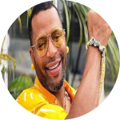

/@yuridacunha-Esta é a minha conta do Instagram.
/@yuridacunha-Esta é a minha conta do Instagram.
Yuri da Cunha (Sumbe, Cuanza Sul) é um cantor angolano. Em 2004, com a
música Makumba, venceu o Top Rádio Luanda daquele ano. Yuri da Cunha é
também vencedor do prêmio Rádio Luanda 2008, na categoria Kianda do
Sucesso pela quantidade de shows e reconhecimento da cultura de seu
país. Em 2010 participou numa tourné de Eros Ramazzotti, por diversos
países europeus.
/@yuridacunha-Esta é a minha conta do Instagram.